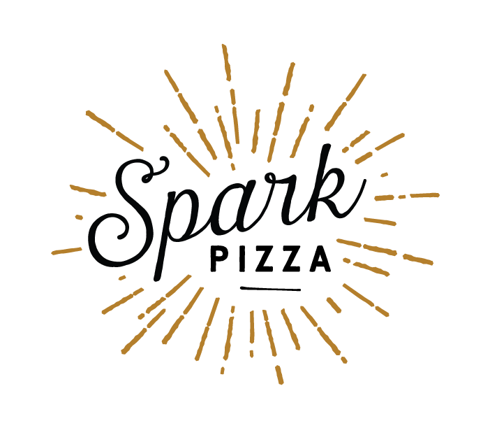
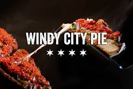

Flying Squirrel Pizza Co.
Flying Squirrel Pizza serves amazing pizzas using the freshest, highest quality, organic when possible, local ingredients,
including meats from Zoe's Meats, Salumi Artisan Cured Meats, locally farmed vegetables when available, coffee from Stumptown Coffee Roasters,
and ice cream from Snoqualamie Ice Cream. The dough and sauce are made fresh on a daily basis. The pork and chicken sausage are also made in-house…the
pork made with hormone-free pork raised in Idaho, the chicken hormone-free from Draper Farms in Mount Vernon, WA.
Spark Pizza

Noticing the need for a high quality, wood-fired pizza option in Seattle, Tony convinced his wife to open Spark, a casual spot with
exceptional food, beer, wine, and cocktails on tap, outdoor seating, plus a friendly staff.
WIndy City Pie

Seattle’s best Chicago-style deep dish, once available only for delivery or pick-up in a variety of
charming but limited arrangements, has its own fully operational outpost in Phinney Ridge. The full
menu includes a rotating selection of slices and a few new twists, including the Mamma Mia pie,
which has roasted garlic, meatballs, and sport pepper.
Veraci Pizza
Veraci Pizza features a delicious ultra-thin artisan crust made from our secret recipe. Each
batch of dough is hand formed with care. With a 3-minute or less bake time, you’re ready to enjoy
fresh at it’s best in no time!